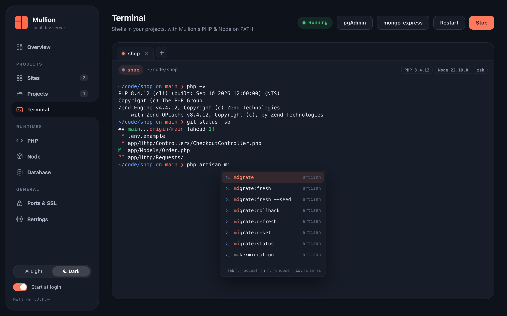

Terminal
A real terminal inside the panel, with each project’s PHP and Node already on PATH and suggestions as you type.

Opening a terminal
- the Terminal page in the sidebar (a shell in your home folder, plus a tab per project)
- the Terminal button on a site card, or Terminal here on a project page
- the project page's Terminal tab
- Run in terminal in the Commands tab, for interactive commands
In Settings → Terminal you choose where new terminals open: as tabs on the Terminal page, in a separate window, or on the project page. Terminal tabs survive switching pages. In Mullion.app, terminal windows merge into native macOS window tabs.
The project's own runtimes
A project terminal starts in the project folder with the site's PHP version, its Node version and Composer first on PATH. That holds even when the project is pinned to a version other than the global one. Your own shell config (.zshrc, .bash_profile) still loads; Mullion re-applies the project PATH afterwards. The header shows which versions are active.
Suggestions
As you type, the terminal suggests:
- files and folders, for the path you're typing
- commands on your
PATH - package.json scripts after
npm run,pnpm,yarnorbun, and the project's binaries afternpx - Composer scripts and subcommands after
composer - artisan commands after
php artisan(Laravel) - Git subcommands, and branches after
git checkout,switch,merge,rebaseorbranch
| Key | Action |
|---|---|
| Tab or Enter | Accept the highlighted suggestion |
| ↑ ↓ | Choose |
| Esc | Dismiss |
After a bare command and a space, only argument lists (scripts, commands, branches) pop up, never a plain folder listing. That way Enter after ls still runs the command.
Running one command without a terminal
$ mullion run shop -- php artisan migrate
$ mullion run shop -- npm run build